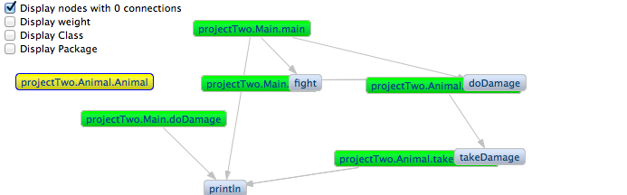

Project Information
Introduction
My DREU project area is visualization software. More specifically, I am working to develop a visualization plug-in for Java Eclipse called VisCG.
Edit 8/6/14: Here's my final report on VisCG!
Application
With more and more developers learning to program, programs have grown in complexity. There is a growing need for useful methods to understand algorithms and find errors in code. This is where my team's project comes in. VisCG is an Eclipse plug-in that visualizes a weighted call graph of a target program. Basically what this means is that it takes an Eclipse project and makes a neat little graph with nodes representing methods and edges representing the method calls. Using this graph, developers can understand the structure of their programs more easily than if they relied solely on the code.
Problem And Action Plan
VisCG is still a work in progress. There are still bugs to fix and features to add. The implementation plan includes:
If this is all finished in time, our team will carry out user studies to see how effective and useful the plug-in is for actual users. For updates on the project, check out the Progress page!